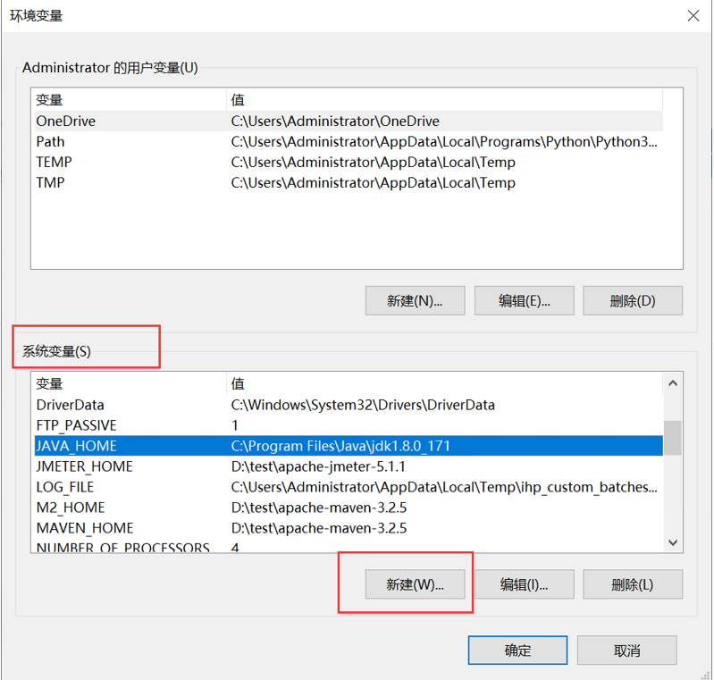
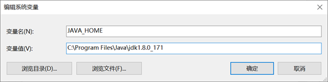
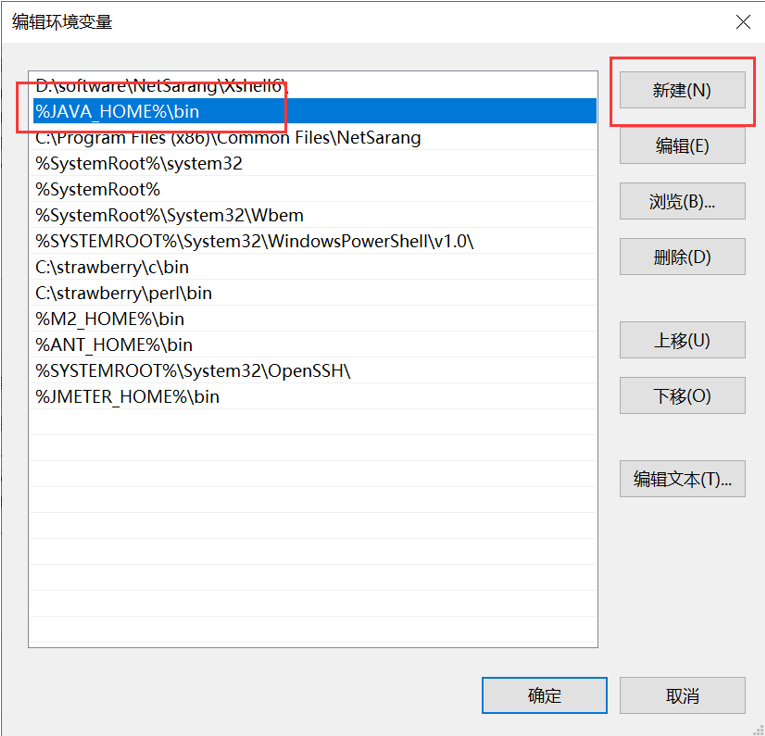
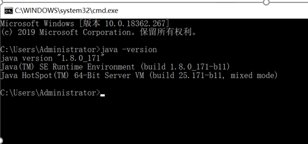
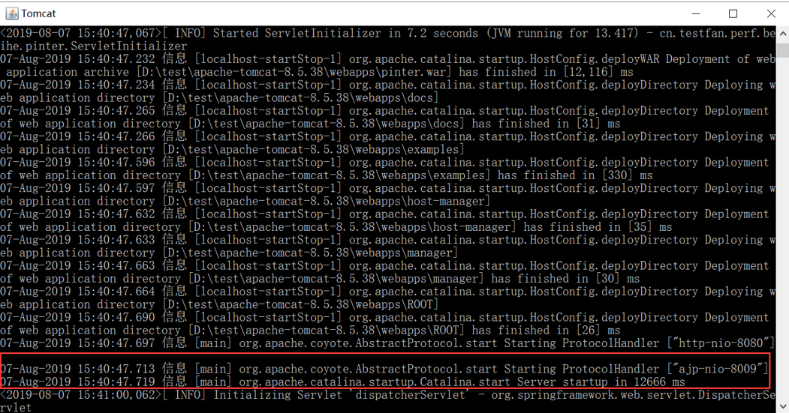
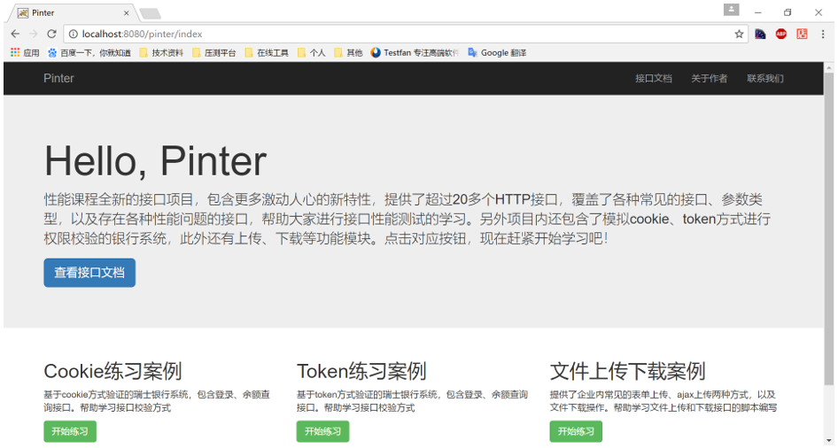

本文档中所有软件的下载地址
链接：https://pan.baidu.com/s/1RREUwlH7GtYMUWeiRjtWVg
提取码：zmjy
一、安装jdk

在“系统变量”出，新建”JAVA_HOME”，配置jdk的安装目录

4.在系统变量中，查找“Path”变量，点“编辑”，在新窗口“新建”一个环境变量，内容如下
%JAVA_HOME%\bin
配置成功后点击确定

5.打开cmd，执行命令java -version，如果显示类似如下信息，代表配置成功

二、配置tomcat
1、 下载网盘中的tomcat
2、 将apache-tomcat-8.5.38.zip解压到任意目录下
3、 下载pinter项目，将pinter.war放到apache-tomcat-8.5.38/webapps目录下
4、 进入apache-tomcat-8.5.38/bin目录下，双击startup.bat
5、 等待tomcat启动，等待出现以下日志，代表部署成功

http://localhost:8080/pinter/index

到此课前环境就部署成功。